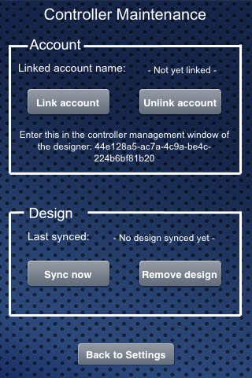

For a convenient user experience, the idea is that the user does not need to access the controller through an extra controller webpage, but can do all tasks from the console.
These tasks include:
- Link controller to online account
- Unlink controller from online account
- Sync design with online account
- Remove synced design from controller
This can be achieved through a "virtual" panel which the controller always returns on the rest call "/rest/panels" even if no design is synced.
If a design is synced, the controller would add that panel to the panels that are included in the design.
I suggest the name "Controller Maintenance" for this panel.
The panel "Controller Maintenance" provides the following information:
- Linked account name: <name> or "Not yet linked"
- 2 Buttons: Link account & Unlink account
- Design synced: Yes / No
- 2 Buttons: Sync design & Remove design
Here is a screenshot:

For this to work we will have to reserve some ID's which the designer cannot use when generating panel.xml since these ID's will be used by the controler maintenance panel.
Regarding the Link and Unlink mechanism for the controller, I will create an extra forum page.
{kind=link}
|
The web controller page will remain available ? |
|
The final idea is that the controller does not need the web page anymore maybe only as a fallback. I am currently in the process of reworking this. The panel in this form is actually not needed. Some more discussion wil take place here: http://www.openremote.org/display/forums/Beehive+AccountService%2C+Security+and+Certificates |